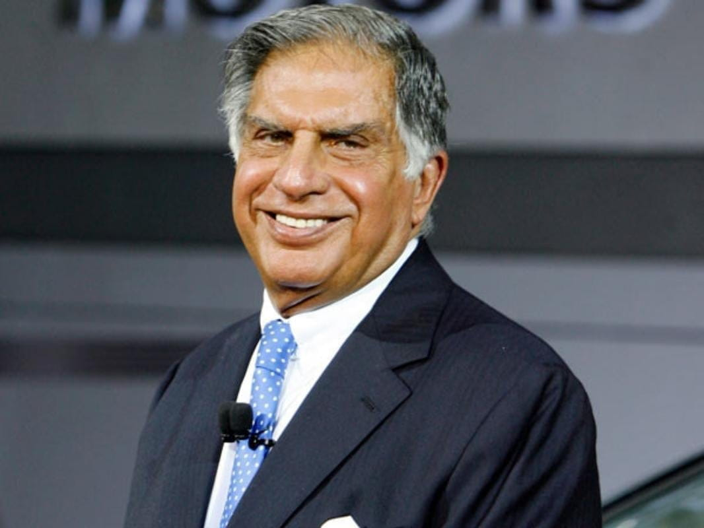

Ratan Tata is a former Indian businessman and industrialist who was the chairman of the Tata Group. He was born on December 28, 1937 in Bombay, now Mumbai. He is the son of Naval Tata and the biological grandson of Hormusji Tata, who belonged to the broader Tata family. He is also related to the group founder Jamshedji Tata through his biological maternal grandmother. He still heads the charitable trusts of the Tata Group. Know More.
